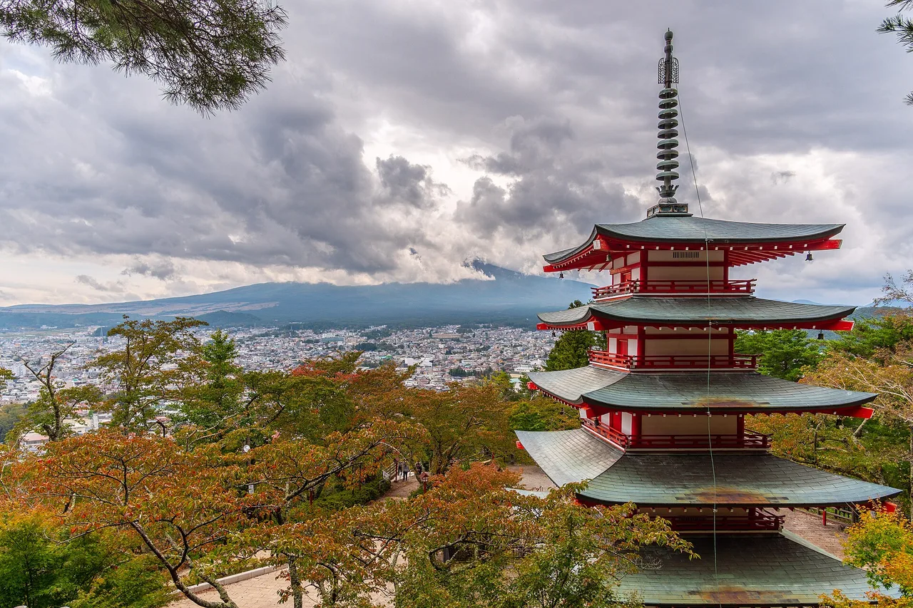

Yamanashi Guía de viaje para estudiantes de japonés
EN RESUMEN
Yamanashi sin litoral se sienta a la sombra del Monte Fuji, compartiendo el pico más alto e icónico de Japón con el vecino Shizuoka y acunando los lagos pintorescos del Fuji de Cinco Lagos. También es la región vinícola líder de Japón, con más de 80 bodegas centradas en la uva nativa Koshu, además de huertos famosos por duraznos y uvas.
📍 Visita:
Chureito Pagoda / Arakura Fuji Sengen Shrine (Fujiyoshida) · 🥢 Prueba:
Houtou (ほうとう) ·
fuente
Los lagos del Monte Fuji, viñedos y la región vinícola de Japón.

Chureito Pagoda Mount Fuji — photo by Benh LIEU SONG from Torcy, France , CC BY-SA 2.0 , via Wikimedia Commons
🍜 Comida ▰▰▰▰▰ 🏯 Cultura ▰▰▰▱▱ 🏙 Ciudad ▰▰▱▱▱ 🚄 Acceso ▰▱▱▱▱ 🌿 Naturaleza ▰▰▱▱▱
🥢 Prueba: Houtou (ほうとう) · 📍 Visita: Chureito Pagoda / Arakura Fuji Sengen Shrine (Fujiyoshida)
🗣 景色がいいですね。 Keshiki ga ii desu ne.
Yamanashi ofrece las vistas clásicas del Monte Fuji desde los Cinco Lagos Fuji, además de la región vinícola más importante de Japón alrededor de Kōfu. Es un escape natural popular desde Tokio.
Qué ver
★ Chureito Pagoda / Arakura Fuji Sengen Shrine (Fujiyoshida) ★ Kuonji Temple, Minobusan (身延山久遠寺) ★ Koshu Valley wineries (Katsunuma/Koshu City) 💎 Nishijima washi papermaking (西嶋和紙の里)
Lago Kawaguchi y vistas del Fuji Mirador de la Pagoda Chūreitō Viñedos y bodegas de la Cuenca de Kōfu Garganta Shōsenkyō
PR Planifica tu estancia
Algunos enlaces son de afiliados. Podemos recibir una comisión sin coste adicional para ti. Solo listamos servicios que usaríamos.
Qué comer
★ Houtou (ほうとう) ★ Koshu wine (甲州ワイン) ★ Shingen mochi & Yamanashi fruit (peaches, grapes) 💎 Kofu tori motsuni (甲府鳥もつ煮) 💎 Ozara (おざら)
Hōtō (cazuela de miso con fideos planos) y uvas/vino.
Cómo llegar y cuándo ir
Cómo llegar: El Lago Kawaguchi está a ~2 horas de Tokio en autobús o tren (vía Ōtsuki).
Mejor época: Mañanas despejadas en otoño/invierno para las vistas más nítidas del Fuji; otoño para las uvas.
APRENDE EL JAPONÉS
きれいですね。
Kirei desu ne. — "Monte Fuji — mejor visto desde los lagos de Yamanashi"
PALABRA LOCAL
富士山
Fuji-san — Monte Fuji — mejor visto desde los lagos de Yamanashi
💡 Bueno saber La Pagoda Chūreitō enmarcada con el Fuji y las flores de cerezo es la foto postal clásica.
PR Planifica tu estancia
Algunos enlaces son de afiliados. Podemos recibir una comisión sin coste adicional para ti. Solo listamos servicios que usaríamos.